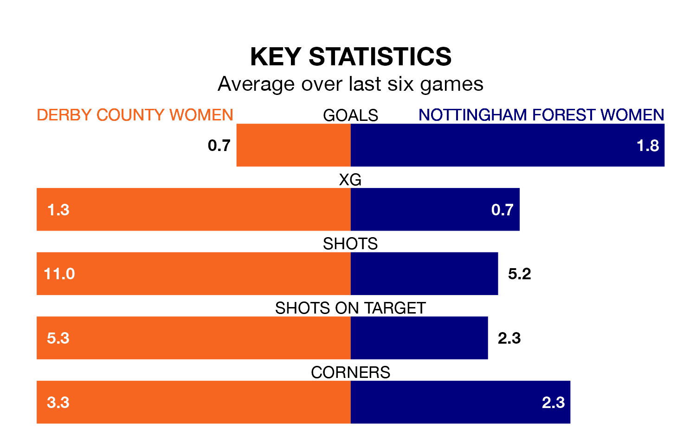

Sunday's early match between Derby County Women and Nottingham Forest Women promises to be one for the neutrals, as two of the Women's National League Premier Division North's most free-scoring sides go head-to-head.
Ahead of the game, Derby County and Nottingham Forest sit third and second in the goal-scoring charts, with 30 and 40 goals respectively.
Nottingham Forest are second in the table after 16 games, of which they have won nine and drawn four, earning 31 points.
Derby County are five places behind the visitors in seventh, with seven wins and two draws putting them on 23 points.
In the last 10 years, Derby County and Nottingham Forest have played each other on seven occasions. Derby County won three of them and Nottingham Forest four.
On average, Derby County scored 1.1 goals and Nottingham Forest 1.4 in those matches.
Their last meeting was on October 8, when Derby County won 2-1 away.
The home side are in bad form in the Women's National League Premier Division North, with one win and a draw from their last six games.
With three wins and three draws over that period, Nottingham Forest's form is much better – they have taken 12 points from 18, compared to Derby County's four.
Derby County's last match was on Sunday, a 0-0 draw against Fylde Women.
Nottingham Forest drew 0-0 with Huddersfield Town Women last time out, on March 14.
Updated: 12:39 (UTC), 26/03/24